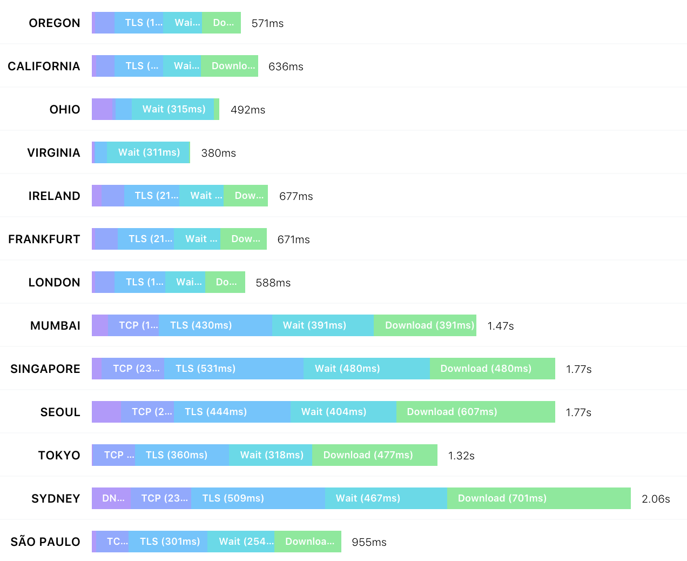
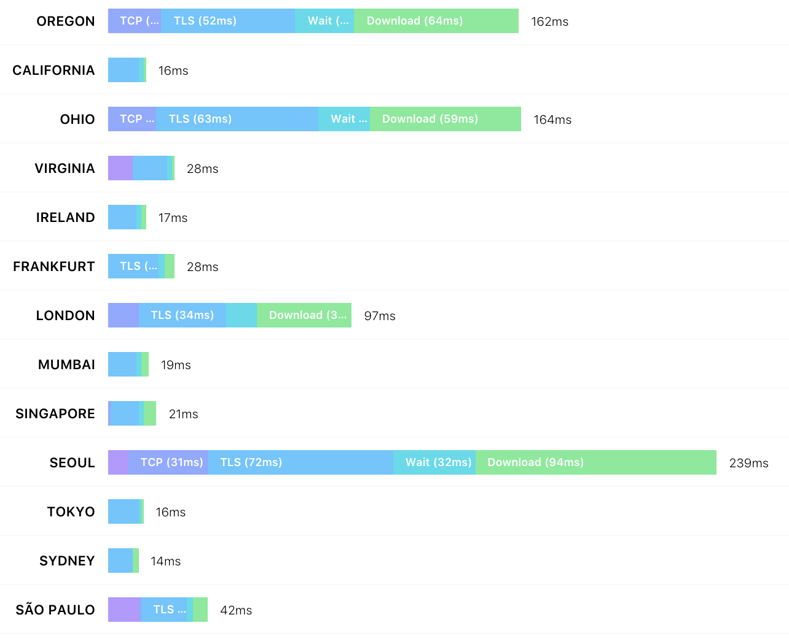

Self-contained Web Components through Serverless Computing
Markus Ast, Martin Gaedke
ts.asukr@m
Traditional Stack

Latency for Wordpress-based Smashing Magazine
Web Services
- Comments
- Votes
- Maps
- Checkout
- ...
New Stack

Latency for JAMstack-based Smashing Magazine
Example: UpVote Component
Integrate Functionality
- Front-end part (UI)
- Back-end part (Persist votes)
Graphic
Issues
- HTML and CSS and JavaScript
- Updates?
- Style Isolation?
Infrastructure as a Server?
- Maintenance
- Different Stacks for different Components
- (Expensive)
- Global distribution expensive
Platform as a Server?
MaintenanceDifferent Stacks for different Components- (Expensive)
- Global distribution expensive
Function as a Server?
MaintenanceDifferent Stacks for different Components(Expensive)Global distribution expensive
export default class UpVoteElement extends ServerlessComponent {
constructor() {
super({
git: 'https://github.com/rkusa/upvote-button-fns.git',
path: btoa(location.href),
})
}
initialize() {
this.load().catch(console.error)
}
}
async load() {
// fetch vote count and render UI
}
async toggleVote() {
// increase/decrease vote count
}
Deployment
sequenceDiagram
participant U as User
participant C as Component
participant P as Cloud Provider
U->>C: click deploy
C->>P: redirect to
P-->>U: ask for deployment authorization
U->>P: authorize deployment
P->>P: deploy function
P-->>C: redirect back
Current Deployment
sequenceDiagram
participant U as User
participant C as Component
participant I as components.cloud
participant P as Cloud Provider
U->>C: click deploy
C->>I: redirect to
I-->>U: ask for deployment authorization
U->>I: authorize deployment
I->>P: deploy function
P-->>I: redirect back
I-->>C: redirect back
Future Deployment Service
- Deploy Git Repositoris directly as a function
- Update Functions from Git (using version tags)
- Possibility to choose/move between Cloud Providers
-
Interoperability between Cloud Providers
- ... also in terms of APIs for Blob, Datastorage, etc.
Future Deployment Service
-
Easier deployment
- Simplify
endpoint="" attribute
- Simplify Cloud Provider Setup
- Better ways of detecting function state (undeployed, deploying, deployed)